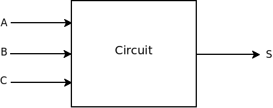
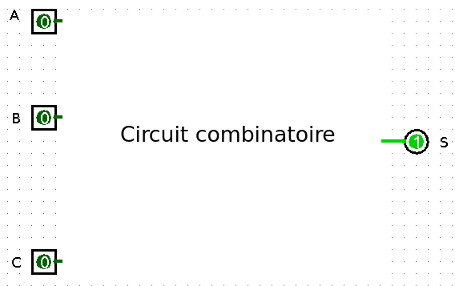

L'objectif de cette activité est de construire un circuit à partir de la table de vérité décrivant la relation entre les entrées (A, B et C) et la sortie (S).
| A | B | C | S |
| 0 | 0 | 0 | 1 |
| 0 | 0 | 1 | 0 |
| 0 | 1 | 0 | 0 |
| 0 | 1 | 1 | 1 |
| 1 | 0 | 0 | 1 |
| 1 | 0 | 1 | 1 |
| 1 | 1 | 0 | 0 |
| 1 | 1 | 1 | 1 |
Il faut construire le circuit à l'aide du logiciel Logisim.
Vous devriez obtenir quelque chose comme cela.
Le logiciel est disponible à cette adresse.
L'enregistrer sous la forme prenom_nom_tpArchi.circ et l'envoyer par courriel.